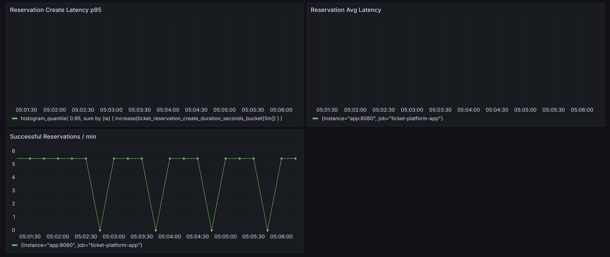
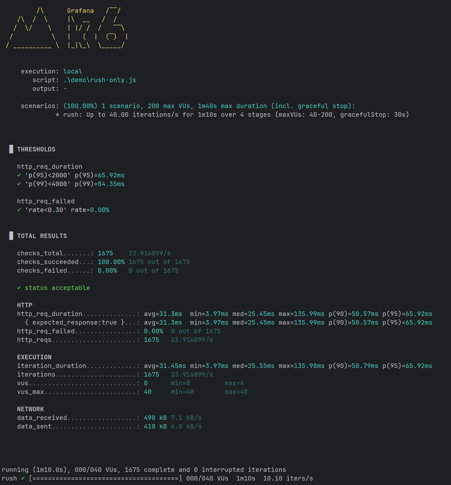

Overview
TicketSystem is an architecture concept for handling high-concurrency reservation workflows. Instead of maximizing request throughput at all costs, the system prioritizes consistency, controlled load handling, and predictable behavior under stress.
Problem
High-demand reservation systems often fail under load due to race conditions, database contention, and uncontrolled request spikes. This leads to overbooking, inconsistent data, and degraded user experience.
Architecture Approach
Backpressure over Failures
Incoming requests are controlled through rate limiting and queueing, ensuring the system remains stable instead of collapsing under load.
Consistent Locking
Critical sections are protected through deterministic locking strategies to prevent race conditions and double bookings.
Sync / Async Separation
User-facing actions are kept lightweight, while heavy operations are processed asynchronously in background workers.
Idempotent Requests
All operations are designed to be safely repeatable, ensuring consistency even under retries or network issues.
Key Features
The system integrates monitoring and performance analysis as a first-class concern, allowing real-time visibility into request handling, queue depth, and latency behavior.
Screenshots & Monitoring



Challenges
The main challenge was balancing throughput with consistency. Allowing all requests to pass leads to system instability, while strict control introduces latency. The solution required careful trade-offs between user experience and system reliability.
Learnings
This project reinforced that scalable systems are not about handling maximum load at any cost, but about maintaining predictable and consistent behavior under pressure. Observability, clear separation of responsibilities, and deterministic logic are key to building reliable systems.